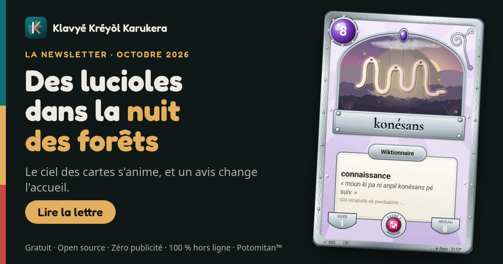

Ce qui change dans le clavier, édition après édition. La plus récente en premier.

Des lucioles sur les cartes de forêt, un ciel étoilé, le cimetière de Morne-à-l'Eau redessiné, et un avis du Play Store qui change l'accueil.